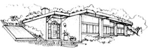
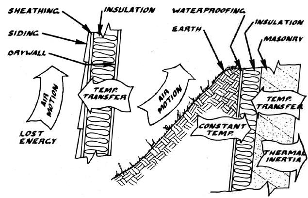
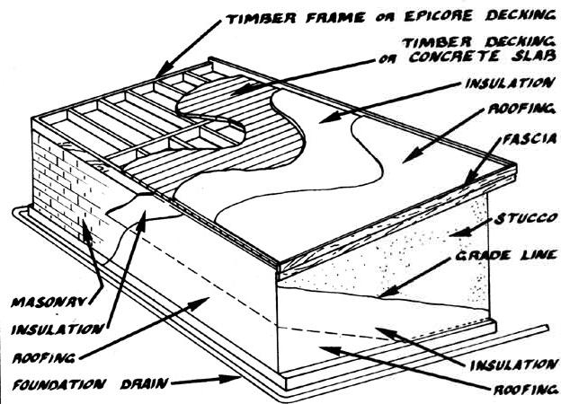
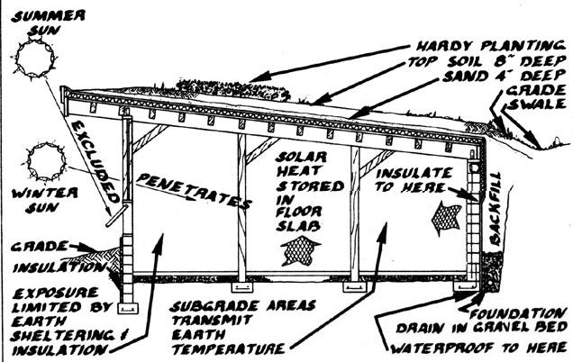

Follow an architect as he leads us through the planning, pouring, and pounding involved in . . .
All too many of us have found that building an energy-efficient home seems to be a dream . . . a fantasy that's kept just out of reach by escalating prices and high interest rates. Of course, MOTHER has long been exploring ways of breaking this vicious circle of waste, and one inventor of solutions - whose work we've shown you before (starting back in issue 67) - is architect Angus W. Macdonald. Angus developed a number of housing designs that apply low-cost building techniques to passive solar, earthtempered homes . . . and agreed to relate, in a series of articles that has now spanned six issues of MOTHER, much of what he's learned about planning and building such structures. The series has followed the actual constructionof one of the architect's standard designs . . . Sun Cottage.
Through the course of the past five articles, we've talked-in some detail-about what's involved in building an energy-efficient, passive solar, earth-sheltered home. Thus far, however, we've touched only lightly on the theories upon which such a structure's performance is based. Consequently, in this, the final installment of our series "Building the Sun Cottage", we're going to pay particular attention to the proper detailing that makes the various heat-exchange systems in an earthsheltered, passive solar building work. Then we'll wrap up with that most crucial of all earth shelter components: waterproofing. The appearance, thermal efficiency, comfort, and longevity of the Sun Cottage are all quite dependent on how the structure is finished, so the final stages are perhaps the most important!
HEAT MOVEMENT
The masonry walls and concrete floor slab of our building-those large surface areas surrounding the living space-provide great thermal inertia. . . a term that refers to how slowly a mass reacts to temperature change. Heat is stored in the mass and is later radiated gently and evenly into living areas, which is one reason why the Sun Cottage doesn't require a mechanical (or active ) system to distribute stored energy.
Likewise, subgrade (belowground) masonry areas conduct heat to and from the relatively thermally stable earth surrounding the walls. In fact, the ground around an earth shelter changes temperature so slowly that areas eight feet or more below grade are actually warmer during winter than they are in summer. What's more, the overall range of this variation is usually less than 10°F. We call the shielding effect of subgrade construction earth tempering, because it tends to make the building's interior temperatures more constant.
Earth tempering and thermal inertia are very important to direct-gain passive solar homes (buildings in which the living areas themselves act as solar collectors). However, though direct-gain homes embody the simplest form of passive solar construction (and are considered cost-effective by agencies such as the Farm Home Administration, making them eligible for government low-cost mortgages), they can get too warm on sunny winter days. Fortunately, it's possible to control daytime overheating through the use of thermal mass and earth tempering. Windows can be opened to lower the indoor air temperature-making the interior more comfortable-without preventing the exposed masonry areas from absorbing radiant solar energy and storing it for nighttime heating. Thus, the cycles of heat movement in the walls and in the surrounding earth stabilize the direct-gain solar building's tendency not only to cool off at night but also to heat up during the day! (These principles are illustrated in Fig. 1.)
And since those masonry and concrete surfaces act as collection, storage, and distribution areas for wintertime solar input and as earth-tempering conductors, it's important not to cover them with paneling or wall-to-wall carpeting. Doing so would insulate the living areas from the home's thermal mass. Rugs should be used sparingly - for comfort and accent - in direct-gain areas (though non-solar floor spaces, in baths and halls, for example, may be carpeted).
Whenever possible, select conductive interior finishes such as paint, plaster, tile, or textured stucco for walls . . . and use vinyl tile (without cushioned backing), quarry tile, or epoxy glaze for floors. Horizontal surfaces should be finished in a dark color to hide dirt and to readily absorb radiant energy. The dark red of tile or brick pavers, for example, is an excellent color for absorbing infrared radiation . . . the part of the spectrum that provides warmth. What's more, dark floor colors form an attractive contrast to beige or white walls.
All exposed (unbermed) exterior walls must be insulated around the outside of the structure to protect its thermal mass from outdoor temperature variation. As a rule of thumb for most parts of the country, insulation should extend four feet below grade . . . but the real goal is to extend the thermal break to a depth at which there's only a small temperature fluctuation. Then, for the roof and aboveground walls, the thickness of the insulative layer should be doubled.
Of course, an earth-sheltered building can get by with less insulation than could an aboveground building because its walls and roof are protected from direct contact with the atmosphere. You see, heat loss through any medium, including insulation, occurs by way of transfer of energy from rapidly vibrating warm molecules to slowly vibrating cool ones. In most construction, when energy reaches the building's exterior surface, it's drawn off by moving air molecules. Meanwhile, as currents move across those outside walls - and over the roof - carrying away heat, energy transfer continues through the construction. But with the Sun Cottage, earth sheltering protects much of the wall and roof from moving air molecules, so heat transfer is dramatically reduced. As a result, the energy absorbed by the earth-sheltered masonry walls tends to be reflected back into the building. Thus, the temperature gradient in the mass fluctuates back and forth throughout the daily cycle. In fact, the 12" rear walls are so massive that eight hours is needed for a temperature change to be completely transmitted . . . which means that warmth absorbed during the day will be returned to the interior at night.
There are two kinds of insulation that are readily available for application to the outside of the Sun Cottage: urethane foam and expanded polystyrene. The former material is sprayed on by roofers and insulating companies and normally has an R-factor of about 7 per inch of thickness. Expanded polystyrene, often called EPS or beadboard, comes in rigid panels of various sizes, and offers an R-value of about 4.5 per inch. Waterproof polystyrene (extruded rather than expanded) has a higher R-factor but is also more expensive per R than is beadboard. Because the Sun Cottage's insulation is protected by a waterproof membrane, the pricier material is unnecessary. You might also keep in mind that, while sprayed-on foam provides a seamless surface, EPS can be applied by an amateur using a strong, flexible adhesive called contractor's glue that's made for the purpose. Another potential advantage to polystyrene is that the boards can be custom-cut to form slopes in flat roofs or to conform to other construction parameters.
WATERPROOFING
Then again, earth-sheltered surfaces must be protected from moisture by a carefully applied waterproof membrane that extends from the eaves right down to the footing bottom. I recommend that you use a material that remains slightly elastic . . . so that it can be applied over insulation laminated to the walls without cracking or spalling off under pressure from the backfill. In any event, don't use cement-based products to coat EPS board or urethane foam: Such materials are so brittle that they'll crack when the foam underneath gives.
I've gotten good results using PennKote Two-Part Membrane-usually called TPM - manufactured by PennKote Inc., Dept. TMEN, 819 West 22nd Street, Tempe, Arizona 85282. The compound is mixed on site to form a permanently elastic roof and subgrade wall coating that can be applied by spray gun, brush, or roofer's broom. (Insulation and waterproofing detail is shown in Fig. 2.)
Before backfilling, the foundation drain - a 4" corrugated and perforated plastic pipe-should be placed in a bed of gravel located around the footing so the pipe will slope gently to screened ends at a lower grade. This drain must be low enough to relieve any water pressure against subgrade walls, so its high point will usually be at floor level. Also, spread at least one foot of additional gravel over the drain to keep the area from becoming plugged with silt. (Some contractors go so far as to place building paper over the structure to keep backfill from entering the gravel bed.)
Both the waterproofing and the foundation drain should be installed with great care, taking special precautions to cover all joints and angles of the structure. Be sure, too, to follow the manufacturers' directions very carefully when applying insulation and waterproofing: There are few experiences more heartbreaking than moving into a beautifully finished earth-sheltered home only to discover leaks during the first rain.
THE FACADE
Use small amounts of Penndex-a smooth, resilient filler also made by PennKote-to even up and fill imperfections in joints between EPS boards. Then apply a resilient, textured coating-such as Penntex or stucco-over all exposed exterior walls, either with a spray gun or a trowel. Penntex is available in tan or white . . . and is a colorfast, no-maintenance acrylic finish that will fill minor surface variations. Once the wall coatings are in place, you can apply eave trim for appearance. This wood can be stained, varnished, or oiled and will need only occasional maintenance.
THE EARTH ON THE SHELTER
Carefully backfill to the finish grade line, sloping the earth away from the house so that rainwater won't pond near the structure (see Fig. 3). Then spread some of the topsoil that you saved from the excavation onto the disturbed areas. To cover the roof, start by gently putting a 4" layer of sand on the waterproofing membrane to facilitate rapid drainage. Then mix more topsoil with an equal amount of manure, mulch, or peat moss . . . to produce a rich, light, loamy mixture. Place 8" of this growing medium over the sand, making the total earth shelter 12" thick. This thickness is sufficient to support ground cover and is the depth for which our structure has been designed.
Plant a hardy, maintenance-free ground cover on your roof. It's best to pick one that has a horizontal, continuous root system - so that frequent watering won't be required-and that is indigenous to your area. It should grow thickly enough to reduce the earth's exposure to weather and to discourage rooftraffic. Pachysandra, ivy, and spreading juniper are three good examples. In any event, keep the roof free from weeds or trees, since their taproots could damage the waterproof membrane below.
That just about wraps up the story of "Building the Sun Cottage". We've covered quite a bit of ground in the last year's worth of articles, but we've also recognized that even this ambitious series is little more than an introduction to the complex business of constructing your own home. Our next step, then, will be to produce a book, based on this series, that will allow us to lead you step by step through the process of building a low-cost, earth-sheltered home. Look for an announcement on the availability of that volume in a future issue of MOTHER!
In the meantime, if you're busy constructing your home (or if you're already enjoying the benefits of earth-sheltered living), be proud that you're involved in creating lasting real estate value by building a home that responds naturally, without mechanical means, to the seasons. Whatever happens to energy prices or availability, your home will be comfortable at minimum expense. And as energy costs rise, the value of your home will soar accordingly. In fact, anyone who's even planning to build an energy-efficient home can look forward to making a livable investment in the future.
EDITOR'S NOTE: For our example in this series of articles, we've chosen the two-bedroom Sun Cottage, an expandable, earth-sheltered, passive solar plan with 1,023 square feet and an estimated building cost of $24,000 (assuming some owner assistance in construction). Angus W. Macdonald has drawn this standard plan according to IUD's Minimum Property Standards and the Building Officials and Code Administrators' (BOCA) building codes. Complete architectural drawings, specifications, and cost analysis may be purchased from Survival Consultants, Dept. TMEN, P.O. Box 21, Rapidan, Virginia 22733. You can also receive Angus's catalog of 12 low-cost, passive solar, earthtempered homes by sending $5.00 to Survival Consultants.
Regular readers who'd like to review the articles on earth sheltering that we've run in the past might want to refer to some of the following issues and page numbers: 45:80-81; 52:96-99; 58:106-107; 54:112-113; 49:64-65; 46:18-28; 77:130-132; 77:144-145; 80:140-141;81:122-124; 82:176177; 83:150-152; 84:106-108; 84: 150-152; 85:68-69; 85:150-152; 85:164-166.
Or, if you're new to MOTHER, you might want to pick up a copy of THE Mother Earth News SHELTER SPECIAL, which contains numerous articles about all types of energy-efficient construction, including earth sheltering. You can order a copy by sending $3.95, plus $1.25 shipping and handling, to Mother's Bookshelf, 105 Stoney Mountain Road, Hendersonville, North Carolina 28791. You can also order back issues of MOTHER from the same address for $3.00 each.
|
 FIG.1 COMPLETED THREE-BEDROOM SUN COTTAGE |
 FIG.2 NORMAL CONSTRUCTION |
 FIG. 3 INSULATION AND WATERPROOFING |
|
 FIG. 4 COMPLETED SECTION |
|
|